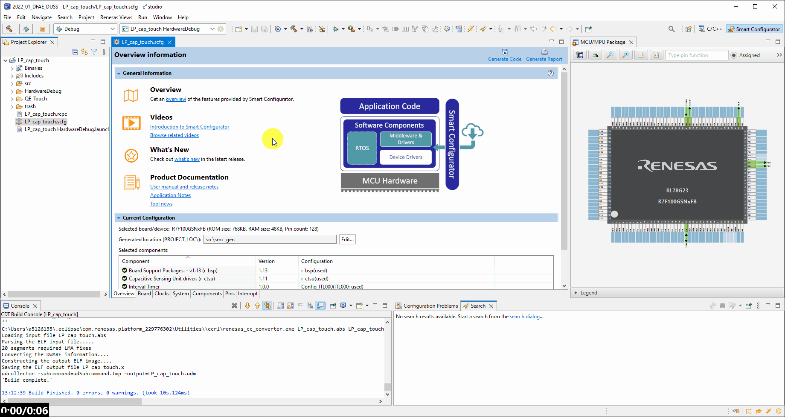
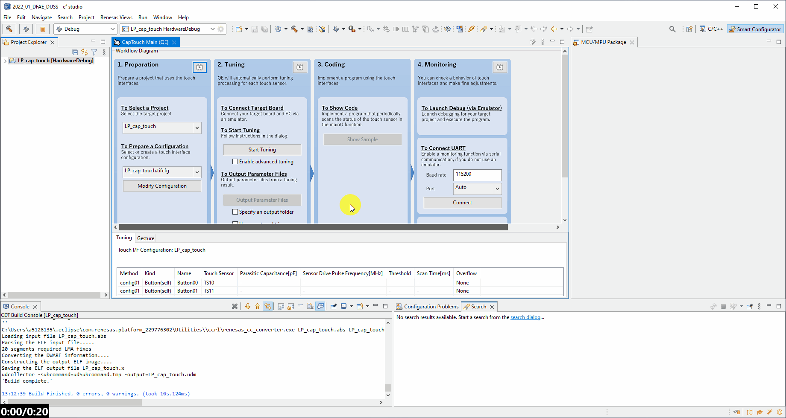
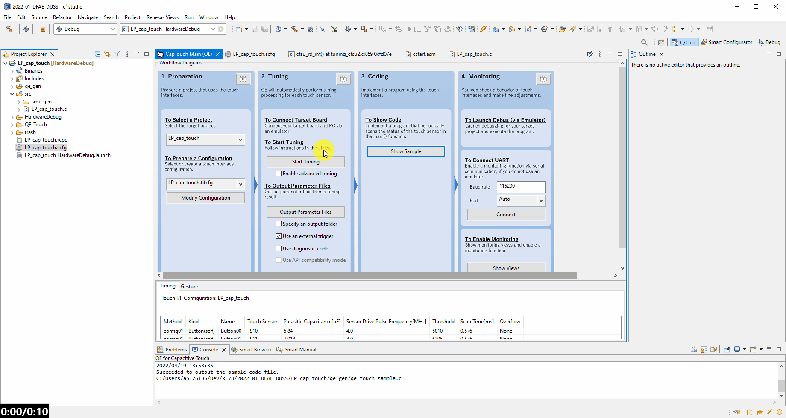

Here we will guide you through the utmost basic use of the QE tools for capactive touch, in order to tune the RL78/G23 128p FPB and output both the tuning parameters and some sample code.
First launch the QE Tools.
Renesas Views → Renesas QE → CapTouch Main

Now in the 2. Preparation column of the CapTouch Main (QE) window, use the first drop down to select your project.
Then in the second drop down select Create a new configuration.
When the configuration editor appears, select Button and create two buttons bt clickong on the blank work area twice.
Press Esc to cancel making buttons on click.
Then double click each of the buttons and select TS10 & TS11 respectively.
Finaly click Create.
In order to run the tuning on this project we must make some adjustments to the debug configurations, this is so we can use the COM port debugger
to perfrom the tuning process.
[Right-Click] project → Debug As → Debug Configurations... → Renesas GDB Hardware debug configuration (for your project).
Select the Debugger tab and finally select the Connection Settings mini-tab.
In here set the correct COM port which the RL78/G23 128p FPB board has appeard as.
Finally click Apply and Close.

To tune the capactive touch please follow along with the video below.
To start the tuning process ensure in column 2. Preparation that in both dropdowns the project and tifcfg are
approriately selected and only then to click Start Tuning in column 2. Tuning.
For clarification, when touching the buttons for touch sensitivity tuning, we are looking for a difference of at least a few thousand counts.
Example No Touch:
Example Touch:
Now to retrieve the tuning data computed in the previous step we must acquire the parameter file.
First though, to enable the snooze operation and hardware triggering of the CTSU we have to enable the Use an external trigger checkbox.
Then click Output Parameters Files.
Now in the 3. Coding column of the CapTouch Main (QE) window, click Show Sample and proceed to click Output to a File.
This will place the parameter files and code in the source folder qe_gen.
